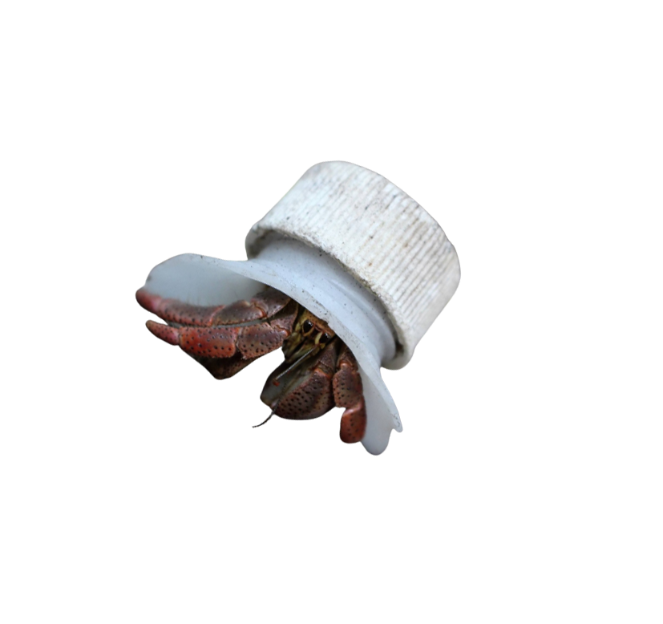

Homeless hermit crabs are becoming a real issue all over the world. While Hermit crabs spend countless hours searching for a place to call home, many are less fortunate and never find their perfect shell and are left to find alternative housing solutions. We strive to turn Crabby Crabs into happy ones with several shell options that will give your crabby crab the space they need.
